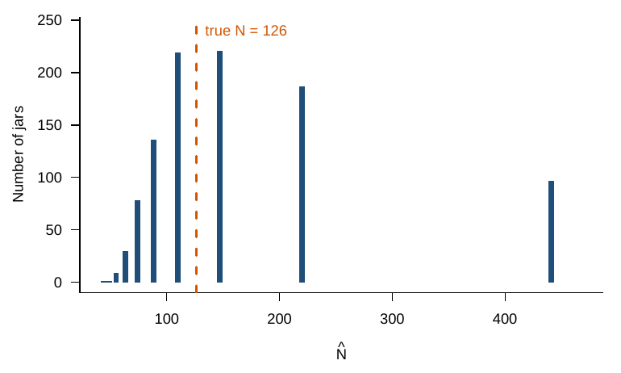
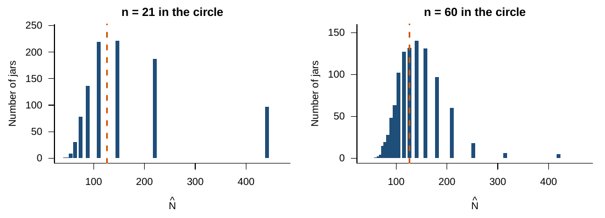

Chapter 4 Simulating the jar
The computer version of the jar follows the binomial exactly: each object in the circle is a cube with probability \(M/N\). All simulations use 1,000 repetitions and set.seed(2026).
set.seed(2026)
N <- 126 # true total (unknown in practice)
M <- 21 # cubes swapped in
n <- 21 # objects in the circle on the second toss
k1 <- rbinom(1, size = n, prob = M / N) # one toss
M * n / k1 # one estimate of N
R <- 1000
k <- rbinom(R, size = n, prob = M / N)
N_hat <- ifelse(k > 0, M * n / k, NA)
summary(N_hat)
quantile(N_hat, c(0.05, 0.95), na.rm = TRUE) # middle 90% of the estimates
mean(k == 0) # share of jars with no cubes in the circle
Figure 4.1: Estimates from 1,000 simulated jars with N = 126, M = 21, and n = 21.
The estimates have a median of 147, and the middle 90% runs from 74 to 441. The distribution is skewed right: tosses with few cubes in the circle divide by a small number and give very large estimates. The distribution also has gaps, because \(\hat N = 441/k\) takes only a few values. About 2% of jars have no cube in the circle.
4.1 What does a bigger second toss buy?
sim_jar <- function(n, R = 1000) {
k <- rbinom(R, size = n, prob = M / N)
ifelse(k > 0, M * n / k, NA)
}
est_21 <- N_hat
est_60 <- sim_jar(60)
rbind("n = 21" = quantile(est_21, c(0.05, 0.95), na.rm = TRUE),
"n = 60" = quantile(est_60, c(0.05, 0.95), na.rm = TRUE))
Figure 4.2: A second toss of 60 objects instead of 21.
With \(n = 60\), the median is 126, the middle 90% runs from 84 to 210, and no jar has \(k = 0\). A larger sample narrows the spread of the estimates around the true total.